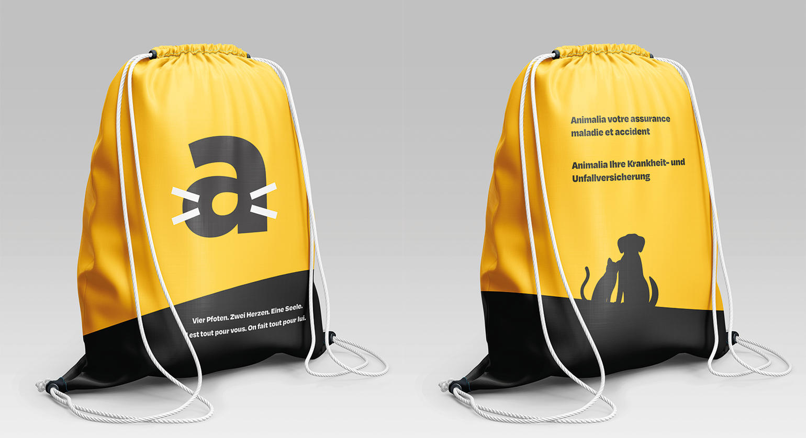
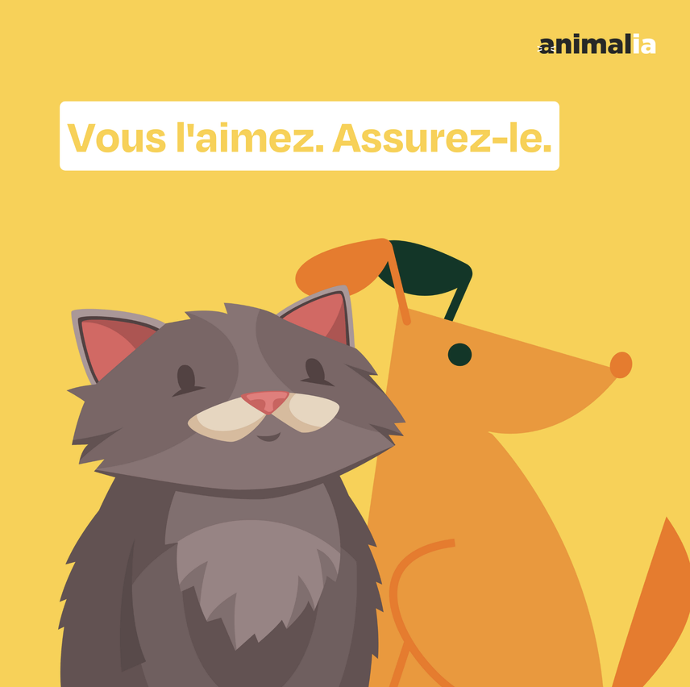

« Vous l'aimez. Assurez-le. »

Tous les projets
Animalia · Anthony Da Costa — 2024
Animalia — l'assurance qui aime les animaux. Une vidéo de notoriété et une identité illustrée, chaleureuse et accessible.
Pour Animalia (assurance maladie et accidents pour chiens et chats), le projet décline un univers illustré tendre et lisible : film de notoriété, contenu social et déclinaisons produit, autour d'une promesse simple — « Vous l'aimez. Assurez-le. »

« Vous l'aimez. Assurez-le. »
